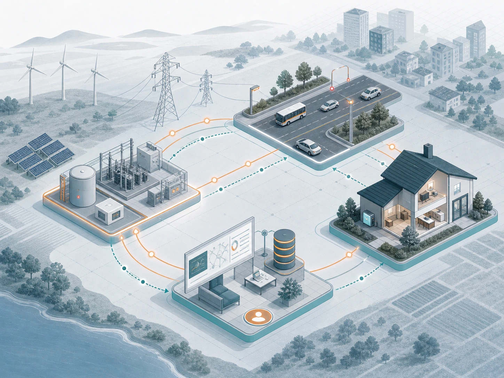
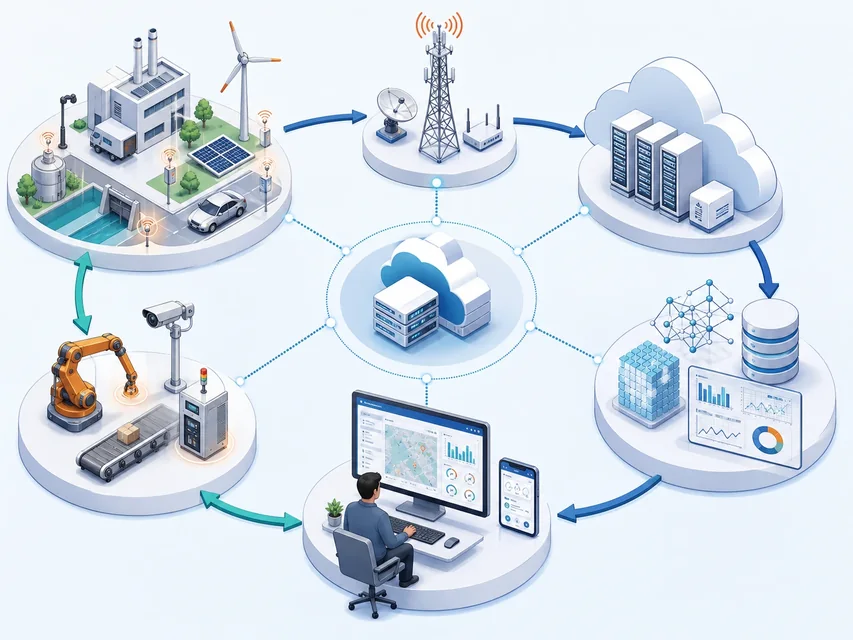
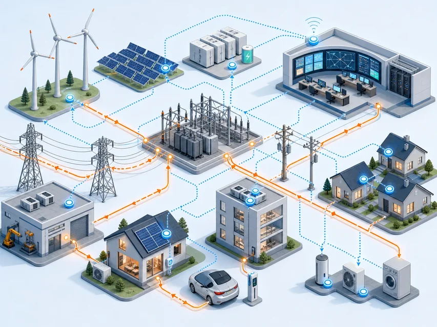

看到
传感器、标识和定位让系统知道对象是谁、在哪里、处于什么状态

传感器联网之后，还要证明服务真的改善了人的工作或生活
 VER. 2608
Built with impress.js
VER. 2608
Built with impress.js
提交架构图和责任表，说明原有问题、系统动作、改善证据和失败负责人
还要知道何时开关、谁确认策略、是否真的省电、误关后怎样恢复
闭环示意，架构可不同，云平台非必需 对象／环境 → 感知／识别 → 连接／数据 → 分析／决策 行动／执行 → 反馈／复盘 → 对象

云平台非必需；关键是传感器看到什么、谁判断、执行器做什么、结果回给谁
传感器、标识和定位让系统知道对象是谁、在哪里、处于什么状态
规则、模型或人根据输入选择是否行动，并记录使用的数据和版本
执行器、服务或人改变照明、调度等流程，再记录实际结果供下一次判断
路灯节能比电量，交通提效比等待时间；计入设备、计算、维护和受影响人群
减少等待、重复劳动、资源浪费和不必要的调度
更早发现异常，降低事故概率，支持接管与恢复
让服务更适配人的处境、能力和长期状态
协同能源、材料、空间和交通，兼顾新增设备与计算成本
改造前记录 → 改造后同口径记录 → 谁核对变化 新增设备与副作用 → 谁处理
| 场景 | 请写已有能力 | 请写还要补什么 |
|---|---|---|
| 智能路灯 | 填写 | 填写 |
| 远程医疗 | 填写 | 填写 |
| 智慧农业 | 填写 | 填写 |
| 共享出行 | 填写 | 填写 |
画出路灯或设备采集什么、按什么规则开关、实际亮度和电量怎样、谁处理误动作，才算完整应用
先读发电到用电的能量路径，再看信息与控制如何协同
典型能量路径：发电 → 输电 → 变电 → 配电 → 用电
图例：橙色实线＝能量流；蓝色虚线＝跨环节信息／控制流

仪表、传感器报告负荷和状态；平台给出预测建议；限载、切换与恢复要确认
传感器、智能仪表和状态监测让设备、负荷和能源质量可见
通信、数据平台和控制把需求预测、故障诊断、巡检与调度连起来
分布式能源、储能和需求响应让用户可以参与系统调节
关键控制仍需隔离、确认和应急保护
预测负荷与可再生能源波动，监测机组状态并安排维护
识别线路、变电站和配电设备的异常，支持巡检、故障定位与恢复
智能电表、家庭能源管理与需求响应帮助用户理解并调整用电
| 信息流 | 物理动作 | 必须守住 |
|---|---|---|
| 负荷与状态 | 调度、限载、检修 | 安全隔离、授权、人工责任 |
| 故障与告警 | 切换、抢修、恢复 | 证据、顺序、应急预案 |
| 用户需求 | 峰谷调整、能源管理 | 透明、可选择、不误伤弱势用户 |
| 场景与采集 | 请写分析 | 请写调度 | 请写复核 |
|---|---|---|---|
| 负荷高峰：负荷、天气、设备状态 | 填写 | 填写 | 填写 |
| 覆冰或故障：设备与质量异常 | 填写 | 填写 | 填写 |
高峰调度记录应能回答系统建议限多少、谁批准、实际影响哪些用户、失败后如何恢复供电
这些对象可按场景组合，不表示每个系统都必须有同一种平台和网络
典型分工（可组合）：人／车／路／环境 → 感知／连接 → 平台／空间数据 → 调度／服务
摄像、雷达、车载终端、信号机、路侧设施与移动终端
车内网络、车联网、移动通信、路侧通信与互联网
数据库、云计算、地理信息系统 GIS、数字孪生和数据分析
收费、公交、导航、应急、协同驾驶和完整出行服务
车辆只是参与者，V2X 可支撑部分交通协同
车辆共享速度、位置、意图和风险，支持编队、避碰与协同
车辆与信号灯、道路、收费和施工设施交换信息
车辆与行人、骑行者和弱势交通参与者共享提醒与优先权
车辆接入平台和网络，获得地图、服务、调度与远程支持
出行：步行／骑行 → 乘车 → 换乘 → 到达 V2X 可支撑部分路段协同；完整出行需组合多段服务与责任
完整出行以一次旅程为对象，仍需核对延迟、覆盖、互操作、误报和人工接管
| 场景 | 请写设备与数据 | 请写平台与网络 | 请写应用与人工参与 |
|---|---|---|---|
| 收费站 | 填写 | 填写 | 填写 |
| 道路施工 | 填写 | 填写 | 填写 |
| 公交换乘 | 填写 | 填写 | 填写 |
| 紧急救援 | 填写 | 填写 | 填写 |
交通应用的效率不能以把行人、残障者或现场人员排除在决策之外为代价
传感器报状态，网关传递或处理，规则决定关灯，用户可查看、拒绝和恢复
角色视图（可组合）：设备／家电｜家庭网络／网关｜本地或云平台｜用户终端／服务
采集状态、执行动作；受算力、电量和物理安全约束
连接设备、转换协议、协调本地交互；支持隔离和断网策略
保存规则、模型和历史，支持学习与远程服务；承担权限与更新
呈现状态、接受意图、请求确认；保留拒绝、撤销和人工接管
一项服务依次经过感知、连接、理解和行动；人可理解、控制、拒绝与恢复
温度／光照／门窗／活动／能耗／健康／设备状态
设备／家庭网络／网关／远程访问／协议
规则／模型／习惯／情境
照明／遮阳／安防／温控／健康／媒体／能源
人的入口：看见关灯原因、手动覆盖、拒绝继续收集，断网时恢复基本操作
“把灯关掉”需要情境，也需要可撤回
从语音、手势、表情、位置、时间和习惯推断模糊需求
按敏感度和任务选择本地或云端；本地适合快速、离线或敏感控制，云端适合远程访问与长期学习
高风险动作要有确认、撤销、异常提示、离线策略和人工接管
| 数据 | 可能用途 | 需要守住 |
|---|---|---|
| 摄像头、麦克风 | 安防、交互、照护 | 最小化、物理开关、访问告知 |
| 门锁、位置 | 进出与自动化 | 身份、误识别保护、人工开锁 |
| 健康、能耗 | 关怀与节能 | 本地优先、用途限制、共享撤回 |
| 目标 | 请写采集与判断 | 请写动作 | 请写权利与恢复 |
|---|---|---|---|
| 异常照护 | 填写 | 填写 | 填写 |
| 家庭节能 | 填写 | 填写 | 填写 |
| 安防 | 填写 | 填写 | 填写 |
在家庭里，能关掉麦克风、知道规则为何动作、误报后能撤销、断网仍能开门，往往比多一个模型更重要
全自动社区、立体交通、绿色调度要写运行条件、不能排除谁、失败时谁接手
设备、交通工具和基础设施拥有更强的感知、决策与自组织能力
空、地、海、地下与管道等空间被连接，调度和安全更复杂
效率、共享、清洁能源和能源管理减少浪费，也要计入新增材料与计算成本
技术服务人的安全、尊严、选择和共同利益，并保留拒绝、替代和申诉路径
即使等待更短、能耗更低，也要说明动作，并保留拒绝、人工服务和纠错渠道
人可以知道系统在做什么，拒绝不必要的收集或自动动作
关键服务保留人工、离线、低技术和物理操作路径
错误、偏差和不利影响能够被发现、解释、纠正和追责
| 愿景 | 可能改善什么 | 必须处理的问题 |
|---|---|---|
| 全自动社区 | 调度、照护、能源协同 | 误判、依赖、数字鸿沟与失效恢复 |
| 立体交通 | 覆盖、配送、应急 | 空域／地面冲突、能耗、责任归属 |
| 个性化服务 | 更贴合习惯与情境 | 过度推断、偏差、操纵与隐私 |
| 要检查的问题 | 请写可能收益 | 请写运行条件、拒绝或恢复措施 |
|---|---|---|
| 自主 | 填写 | 填写 |
| 绿色 | 填写 | 填写 |
| 公平 | 填写 | 填写 |
| 隐私 | 填写 | 填写 |
全自动社区要具体写出谁少等待、谁可能因无智能手机被排除、谁能选择人工服务、停电后谁恢复
若要减少餐厅排队，先记录等待时间；摄像头、网络和模型能改善指标才加入
示意路径（可按任务组合）：用户问题 → 对象／数据 → 标识／网络 → 计算／智能 执行：应用／执行 → 指标／证据／复盘
写清谁在什么流程中遇到问题，当前等待、错误、能耗或事故是多少
说明谁采集、数据经过哪里、按什么规则判断、谁执行和确认
比较改造前后同一指标，并保留异常日志、用户选择、人工接管和恢复记录
演示成功一次不够；还要测试断网、误识、误动作和用户拒绝
01
02需求 → 体系 → 验证 → 复盘
价值 → 职责／数据 → 指标／证据 → 接管／更新谁遇到什么问题／现在多等多久或耗多少
谁采集／谁判断／谁执行／谁确认
输入错误／断网断电／弱势用户能否使用／隐私和安全
谁接管恢复／怎样回滚／记录哪个版本／谁看反馈
从智慧餐厅、智能电网、完整出行或智能家居中任选一个
| 要检查的问题 | 请写系统怎样做 | 请写哪里会失败 | 请写记录和负责人 |
|---|---|---|---|
| 用户、问题与价值 | 填写 | 填写 | 填写 |
| 运行、维护与影响 | 填写 | 填写 | 填写 |
完成标准是能比较改造前后、演示正常与故障操作、找到每项负责人；不是组件数量最多
交换方案，只看可展示的记录和故障测试；无法判断处写明谁补哪项材料